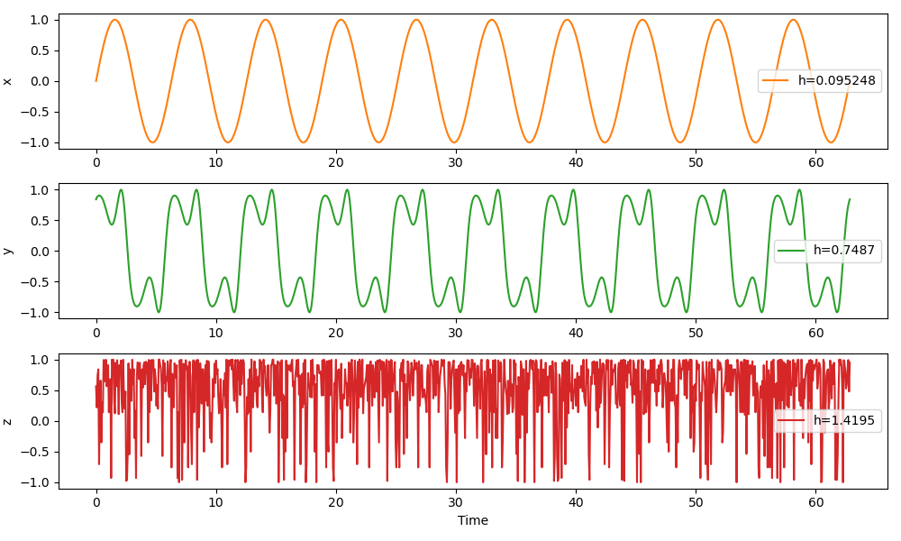

Time-scale (wavelet)
Entropies.TimeScaleMODWT — TypeTimeScaleMODWT <: WaveletProbabilitiesEstimator
TimeScaleMODWT(wl::Wavelets.WT.OrthoWaveletClass = Wavelets.WT.Daubechies{12}())Apply the maximal overlap discrete wavelet transform (MODWT) to a signal, then compute probabilities/entropy from the energies at different wavelet scales. This implementation is based on Rosso et al. (2001)[Rosso2001]. Optionally specify a wavelet to be used.
The probability p[i] is the relative/total energy for the i-th wavelet scale.
Example
Manually picking a wavelet is done as follows.
using Entropies, Wavelets
N = 200
a = 10
t = LinRange(0, 2*a*π, N)
x = sin.(t .+ cos.(t/0.1)) .- 0.1;
# Pick a wavelet (if no wavelet provided, defaults to Wavelets.WL.Daubechies{12}())
wl = Wavelets.WT.Daubechies{12}()
# Compute the probabilities (relative energies) at the different wavelet scales
probabilities(x, TimeScaleMODWT(wl))If no wavelet provided, the default is Wavelets.WL.Daubechies{12}()).
Example
The scale-resolved wavelet entropy should be lower for very regular signals (most of the energy is contained at one scale) and higher for very irregular signals (energy spread more out across scales).
using Entropies, PyPlot
N, a = 1000, 10
t = LinRange(0, 2*a*π, N)
x = sin.(t);
y = sin.(t .+ cos.(t/0.5));
z = sin.(rand(1:15, N) ./ rand(1:10, N))
est = TimeScaleMODWT()
h_x = Entropies.genentropy(x, est)
h_y = Entropies.genentropy(y, est)
h_z = Entropies.genentropy(z, est)
f = figure(figsize = (10,6))
ax = subplot(311)
px = plot(t, x; color = "C1", label = "h=$(h=round(h_x, sigdigits = 5))");
ylabel("x"); legend()
ay = subplot(312)
py = plot(t, y; color = "C2", label = "h=$(h=round(h_y, sigdigits = 5))");
ylabel("y"); legend()
az = subplot(313)
pz = plot(t, z; color = "C3", label = "h=$(h=round(h_z, sigdigits = 5))");
ylabel("z"); xlabel("Time"); legend()
tight_layout()
savefig("waveletentropy.png")
- Rosso2001Rosso, O. A., Blanco, S., Yordanova, J., Kolev, V., Figliola, A., Schürmann, M., & Başar, E. (2001). Wavelet entropy: a new tool for analysis of short duration brain electrical signals. Journal of neuroscience methods, 105(1), 65-75.